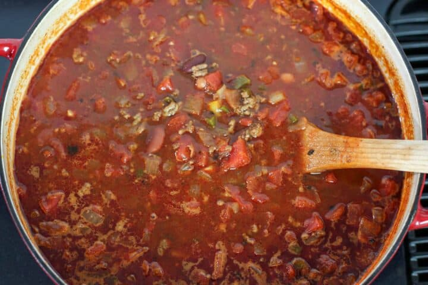

Homestyle Chili

Description
Homestyle chili is a basic chili with ground beef and beans cooked in a beefy and broth with chili spices. My classic homestyle chili has ground beef, tomatoes and 3 types of beans. It can be made in around 45 minutes for a quick weeknight meal or slow simmered to develop the flavors if you have more time. Chili tastes even better the next day, so I usually make a double batch so we have plenty of leftovers and some to freeze for later too.
Ingredients
- 1½ lbs lean ground beef
- 1 medium onion, diced
- ½ cup diced green pepper
- 2 tbsp minced garlic
- 1 tbsp tomato paste
- 2 cans diced tomatoes, with liquid
- 2 cups beef broth, or water
- 1 15 oz can light red kidney beans, drained and rinsed
- 1 15 oz can dark red kidney beans, drained and rinsed
- 1 15 oz can pinto beans, drained and rinsed
- 2 tbsp + 1tsp chili powder, divided
- 1 Tbsp paprika
- 1 tsp ground cumin
- 1 tsp ground black pepper
- salt, to taste
Steps
- In large pot add oil then add onion and green pepper and cook until onion is translucent.
- Add garlic and cook until fragrant, about 30 seconds.
- Season the ground beef with 1 tsp of you chili powder and salt and brown, then drain fat and return to pot.
- Make clearing in the middle of the pot and add tomato paste and cook for about 1 minute stirring frequently to avoid burning.
- Add tomatoes, broth, beans, and spices then stir to combine.
- Let simmer uncovered for at least 30 minutes, stirring occasionally.